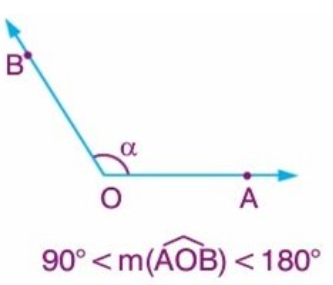

Bir kalemin düzlem üzerinde bıraktığı ize nokta demekteyiz. Boyutu olmayan noktalar büyük harflerle gösterilir.
Sonsuz noktalar kümesine doğru demekteyiz. Doğru tek boyutludur ve iki ucu sınırsızdır. Bir doğru üzerinde bulunan noktalara doğrusal noktalar denir. Farklı iki noktadan da yalnız bir doğru geçmektedir.
İki nokta arasındaki uzaklık, bu noktalara gelen gerçel sayıların farkının mutlak değeri denmektedir. Buradan çıkaracağımız şey iki nokta arasındaki uzaklık kesinlike bir negatif değer olamaz.
Burada A ile B arasındaki uzaklık |AB|=|x-y| şeklinde ifade edilmektedir.
Doğru Parçası: Bir doğrunun belirlenen iki nokta arasında kalan doğrusal tüm noktalar kümesine, bu iki noktanın doğru parçası denir.
Üzerinde doğrular çizilebilen yüzeylere düzlem demekteyiz. İki boyutlu olan dğzlemin boyutları sınırsızdır. Bir noktadan sonsuz sayıda düzlem geçeceği gibi , bir nokta kümesinin tüm noktaları aynı düzlemin içindeyse bu kümenin noktaları düzlemseldir diyebiliriz. Bir noktadan sonsuz sayıda düzlem geçebileceği gibi bir doğrudan da sonsuz sayıda düzlem geçmektedir.
Bunların dışında, bir nokta kümesinin herhangi iki noktasını birleştiren doğrunun tamamı kümenin içindeyse buna konveks (Dış Bükey) küme, tamamı değil de bir kısmı dışında kalıyorsa konkav (iç bükey) küme denir. Aşağıdaki şekilleri kontrol edebilirsiniz.
Dar Açı: Büyüklüğü 0 ile 90 derece arasında olan açıdır.
Dik Açı: Büyüklüğü 90 derece olan açıdır.
Geniş Açı: Büyüklüğü 90 ile 180 derece arasında olan açıdır.
Doğru Açı:Büyüklüğü 180 derece olan açıdır.
Tam Açı: Büyüklüğü 360 derece olan açıdır.
Tümler Açılar: Toplamları 90 derece olan açılardır. Örneğin 50 derece olan bir açının tümleri(tümler açısı) 40 derecedir.
Bütünler Açılar: Toplamları 180 derece olan açılardır. Örneğin 110 derece olan bir açının bütünleri(bütünler açısı) 70 derecedir.
Bir açıyı iki eş açıya ayıran ışına açıortay denir.
Bir üçgenin iç açılarının ölçüleri toplamı 180 derecedir.
x+y+z= 180º
Yukarıda resimde görüldüğü üzere; üçgenin her köşesindeki iç ve dış açılarının toplamı 180 derecedir ve her üç köşeyi toplayıp iç açıları çıkardığımız zaman dış açıların ölçüleri toplamını 360 sonucuna ulaşırız.
y+y’=180º
z+z’=180º
x+x’=180º
y’+x’+z’=360
Bir üçgende bir dış açının ölçüsü, kendisine komşu olmayan iki iç açının ölçüleri toplamına eşittir